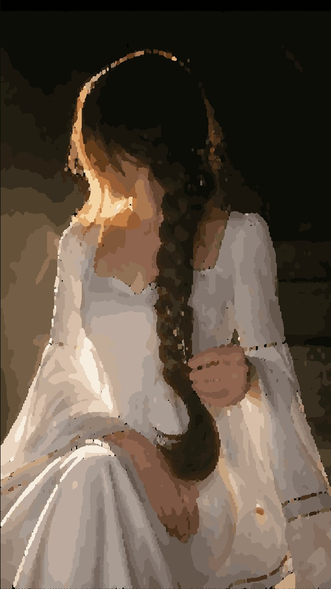
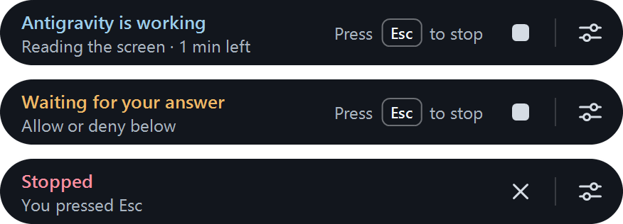

Nobody was holding the mouse.
Gemini 4 Hydrogen painted this portrait in Microsoft Paint, following a stroke plan scripted from the photo. One prompt, 2,553 strokes, about 65 minutes unattended.
/computer-use is the skill it used. In Google Antigravity, the agent sees the screen, reads each app's accessibility tree and drives real Windows and macOS apps with the real mouse and keyboard. Esc stops it at once.
Open source under the MIT licence. Not affiliated with Google.


The 40 colours it typed into Paint's colour editor
What moves here is your browser redrawing the plan the agent ran, step for step. It is a replay, not a recording.
The recording, 200× faster.
This is the screen capture of that run. The agent typed each of the 40 colours into Paint's own colour editor, then laid it down in long back-and-forth rows.
The bar and glow are drawn in, since they're hidden from screen recordings by default.
It reads the app before it looks at it.
Every app describes its own controls: a name, a role and a value for each button, field and slider. The agent reads that tree first, and opens a screenshot only when it needs pixel coordinates or has to judge how something looks.
Your browser keeps the same kind of tree for this page.
Then a task is a short loop.
readyStarts a task and says whether the desktop can be used.
launch --app notepad.exe --observeOpens the app once you approve it and returns its window, a frame and a screenshot.
click --name Settings --role ButtonActs on what it just read: click, type, set a value, press keys, drag through up to 400 points. Every action returns a fresh tree to check against.
endFinishes. An input whose reply was lost is never sent again.
It runs on the model you already have in Antigravity: no API key, no second LLM, no MCP server. Flags are shortened here; the full table is in the skill itself.
Think once. Then run thousands of steps.
The model is the slow part of desktop control: each turn costs seconds, while a step runs in a fraction of that. So plan sends many steps at once, and a 30-turn task drops to about 9.
A plan runs as checked batches of 8 and keeps a ledger. If it stops, it resumes from the ledger without replaying input that may already have landed.
The portrait was one plan of 2,832 steps
- 2,553 strokes. Each a continuous drag of the real mouse across Paint's canvas.
- 123 steps on controls from the tree. Edit colours, its hex box and confirm button, Fill, Brushes and the Size slider, each found by name or id, with no pixel involved.
- 156 plain clicks. One fills the canvas. The rest land on empty grey, so each colour change starts a fresh batch.
Counted from the plan file this page replays.
Esc stops it at once.
Wherever you are, Esc ends the task and lets go of every key and button. Ask it to carry on and it starts fresh. The replay on this page obeys the same key.

A small bar says what it is doing right now, and a soft glow outlines the window it is working in. Your own mouse and keyboard don't pause it, so stopping is always deliberate: Esc, Ctrl Alt F12, or the bar's Stop.

Install
Ask your agent
Paste this into Antigravity and approve the command it shows you.
Install the computer use skill from https://github.com/shayann07/antigravity-computer-use
with the one-line installer for this computer. Show me the command before you run it.Or run one line
It checks the release's SHA-256 before installing anything, and stops if it differs. For Windows x64, and macOS 14 or later on Apple silicon or Intel.
Windows, PowerShell
irm https://raw.githubusercontent.com/shayann07/antigravity-computer-use/main/install.ps1 | iexmacOS, Terminal
curl -fsSL https://raw.githubusercontent.com/shayann07/antigravity-computer-use/main/install.sh | shThen grant Accessibility and Screen Recording when asked.
Then try it
Open a new Antigravity conversation, type the command, then say what you want done.
/computer-use
Open Paint, draw a red circle in the middle, save it to my Desktop as circle.png.Check the download by hand instead
Each release lists a SHA-256 for every archive in SHA256SUMS.txt, and installed copies take updates only from signed metadata. Download the archive and the checksums, and check the archive before you run anything from it.
Windows
In PowerShell, in the folder with the ZIP and SHA256SUMS.txt.
$zip = Get-Item .\AntigravityComputerUse-*-windows-x64.zip
$want = ((Select-String -Path .\SHA256SUMS.txt -SimpleMatch $zip.Name).Line -split '\s+')[0]
(Get-FileHash $zip -Algorithm SHA256).Hash.ToLower() -eq $want # must print True
Expand-Archive $zip -DestinationPath .
.\AntigravityComputerUse-windows-x64\install.cmd --integration direct --sidecarmacOS
In Terminal, with the macos-arm64 (Apple silicon) or macos-x64 (Intel) archive and SHA256SUMS.txt.
shasum -a 256 -c SHA256SUMS.txt --ignore-missing # must print OK
tar -xzf AntigravityComputerUse-*-macos-*.tar.gzThen run install.command and Setup.Mac.Permissions.command. Helpers are signed with the project's own certificate, not an Apple Developer ID. Mac guide